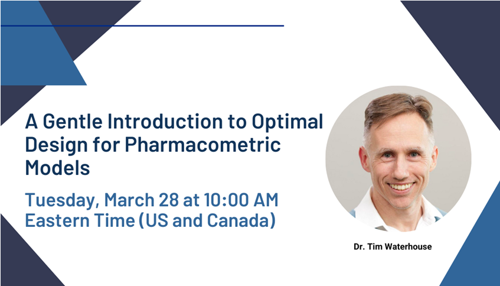

A Gentle Introduction to Optimal Design for Pharmacometric Models

ASA/ISOP SxP SIG is proud to present this important webinar!
Topic: A Gentle Introduction to Optimal Design for Pharmacometric Models
Presenter: Dr. Tim Waterhouse
Time: Mar 28, 2023 10:00 AM EST
PK/PD studies should be designed in such a way that the model parameters will be estimated with adequate precision and bias. This can be assessed by simulation, but depending on the study and model(s) involved, it can be impractical to evaluate many combinations of design variables. Optimal design tools allow us to quickly evaluate designs and even search over a design space for the best possible design.
In this webinar, we will introduce basic concepts of optimal design, and then present examples of how to inform PK sampling time selection using the freely-available R packages PopED and PFIM for optimal design and mrgsolve for simulation.